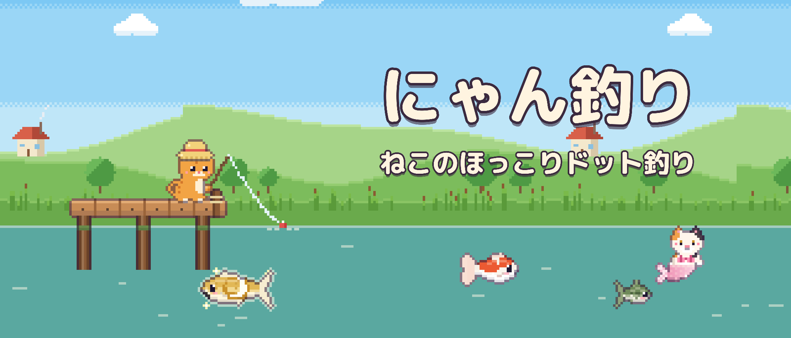
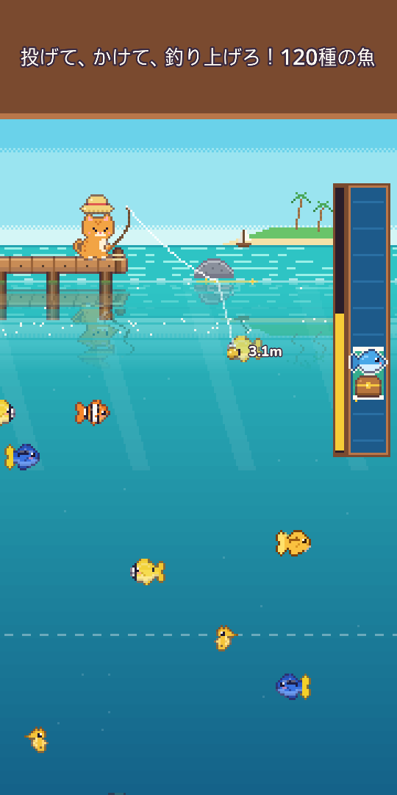
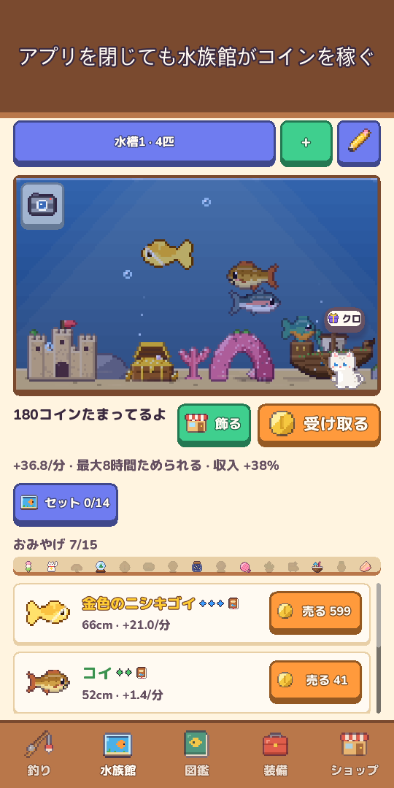
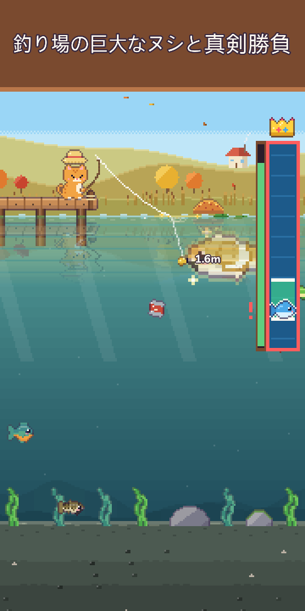
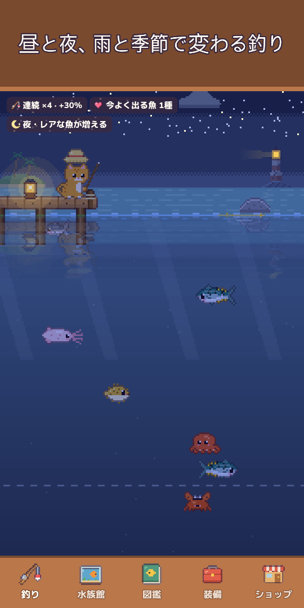
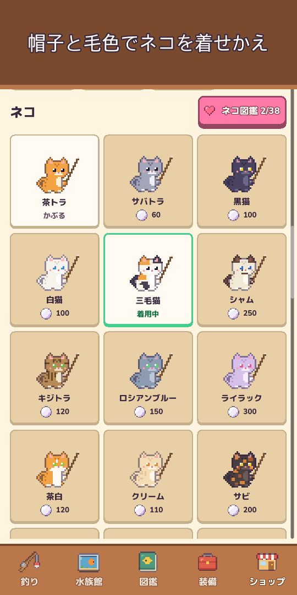
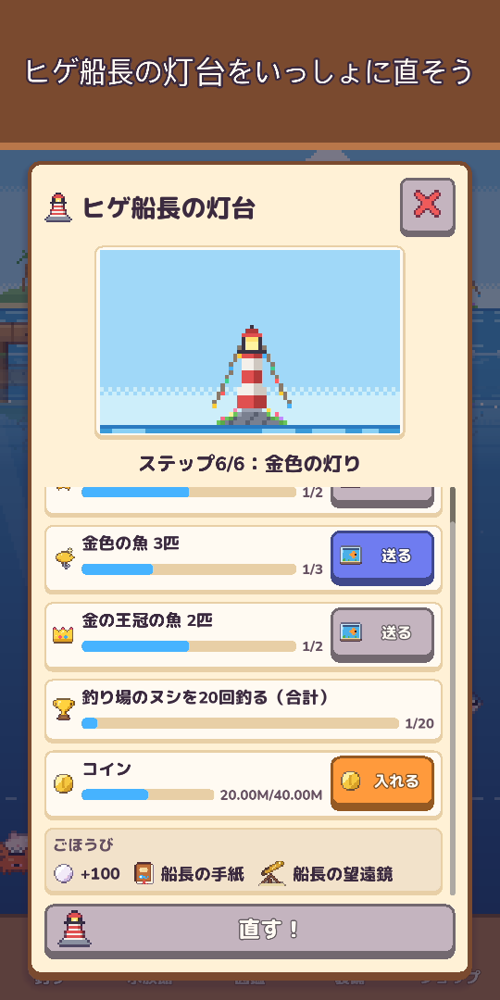
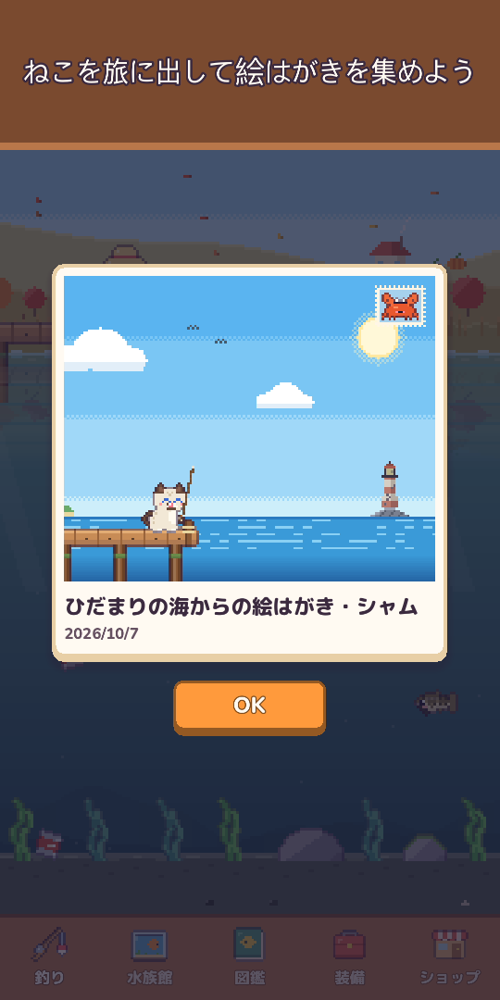

にゃん釣り：ドット釣り＆水族館
ねこのほっこりドット釣り
釣りざおとウェットスーツを持って出発！120種の魚を釣り、海に潜って生きものを撮影し、伝説よりレアなねこ人魚に会おう。








ねこと一緒に、ほっこり釣りの旅へ出かけよう！
にゃん釣りは、指1本で遊べるかわいいドット絵の釣りゲーム。長押しで投げて、水の中に見える魚へルアーを動かし、キャッチバーで手ごたえたっぷりに釣り上げよう。
- 片手でかんたん長押しで投げる／左右にドラッグでエサを誘導／押してキャッチ。ウキが沈んだ瞬間にタップすればアワセ成功で好スタート（しなくてもOK）。広がる波紋、水しぶき、ブルッと振動、お財布へ飛んでいくコインも
- 10の釣り場に120種の魚草原の池、山の渓流、ひだまりの海、サンゴ礁、氷の湖、深海、沈んだ神殿、雲の湖、火山島、マングローブの森
- まれに出る金色の魚、レアな魚の群れ、ツキミゴイ・ホシクジラなどのレジェンド、1日1回現れる釣り場の巨大なヌシ
- ダイビングウェットスーツで各釣り場の海を泳ぎ、釣れない生きものを撮影してフォト図鑑に。ライトを照らして海底の奥に隠れた深場も探そう
- ねこ人魚各釣り場に1匹ずつ、伝説よりレアなねこ人魚がいるよ。水族館に迎えるか、逃がして幸運の祝福をもらおう
- ルアー25種・5段階いいルアーほどレアな魚が食いつき、人魚や伝説を呼ぶ特別なルアーも。強い魚と踏ん張りすぎると糸が切れることも！
- 生きている空時計に合わせて昼と夜が変わり、雨・雪・虹で釣れる魚も変わり、流れ星をタップすると真珠がもらえる。季節の景色と本物の月の満ち欠け、釣り場ごとの6時間先までの空模様、大物がかかりやすいキラキラ光る金色の波も
- 図鑑夜・雨・明け方・季節など、好きな時間がある魚を狙い撃ち。大物記録で金の王冠をゲット。初めて釣った日の空（時間・天気・季節・釣り場）も図鑑に残るよ
- 水族館入れた魚がアプリを閉じている間もコインを稼ぐ。沈没船やサンゴのアーチで飾って、水槽セットで収入アップ、水槽レイアウトは短いコードでシェア。魚をタップすると釣った場所・来た日・いっしょに過ごした日数が見られるよ
- ねことコレクションカエルぼうしから王冠まで、毛色・季節の帽子、居心地のいいネコの居場所。家族のねこを3時間の旅に出すとドット絵はがきを持ち帰り、留守にするとネコ日記に一行残してくれる
- ご近所とおまつりご近所ネコが水族館に遊びに来ておみやげを置いていき、なかよしLv.が上がると新しいおしゃべり・小さな贈り物・なかよしのぼうしも。週間釣り大会、今月の「みんなで釣ろう」、今週のゲスト魚、毎年5つのおまつり（お花見・夏・ハロウィン・クリスマス・お正月）— スタンプをずっと残る限定の飾りと交換
- 灯台守のヒゲ船長が流したビンの手紙を集めて、古い灯台を一緒に直そう
- 自分のペースで成長サオ、リール、ライン、エサ、水槽を強化。釣った魚からエサを作ってその魚を狙える（伝説の魚はのぞく）。今日の依頼と今日のプレゼント（1日休んでも最初に戻りません）、いっしょに過ごした日数の贈り物も
- ほっこりおまけボタンを隠して景色だけをながめるモード、釣り日誌のアルバムに水族館・ネコの居場所の写真を最新12枚、1日1回景色にかくれる小さな子を見つけると真珠
- オフラインでいつでも遊べる
基本プレイ無料。真珠のパック、スターターパック、サポーターパック（広告なしで報酬・王冠の帽子・オフライン収入の上限2倍）は欲しいときだけ購入でき、お金を使わなくても120種すべて釣れます。
強制広告もバナー広告もありません。広告は「売値2倍」など、見たいときだけ選べるリワード広告のみです。
今日はどんな魚が釣れるかな？さっそく投げてみよう！